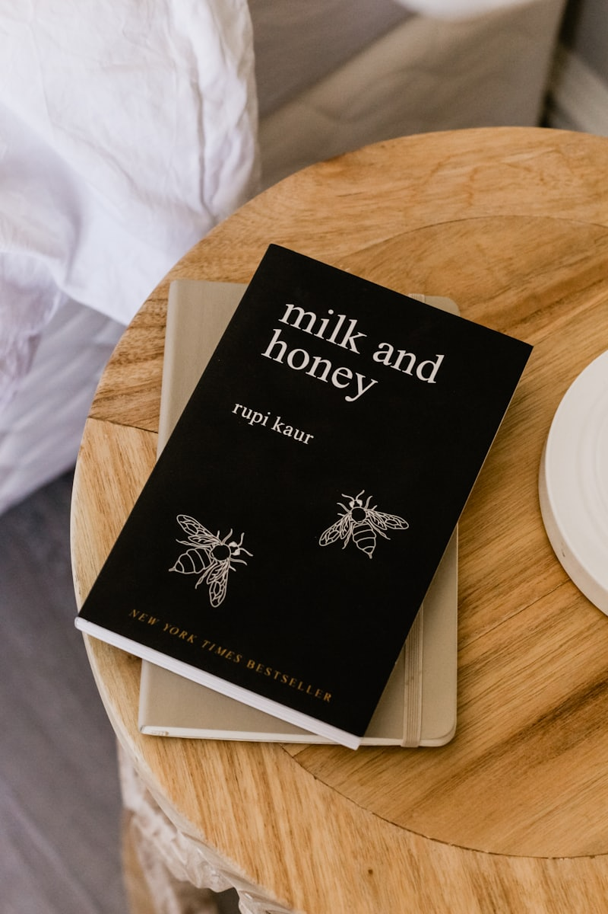

마지막 문학 지문에서 종이 울립니다. 앞에서 시간을 쓴 게 아니라, 문학을 읽는 방식 자체가 느린 경우가 많습니다. 강진에서 고1 국어과외 상담을 받을 때 자주 나오는 이야기입니다. 작품을 꼼꼼히 읽는 습관은 좋은데, 시험은 작품을 다 이해한 사람이 아니라 물음에 답한 사람에게 점수를 줍니다.
문학에서 시간이 새는 자리
- 처음부터 끝까지 한 번 읽고 시작합니다 — 다 읽고 나서 물음을 보면, 묻지 않은 부분까지 해석하느라 쓴 시간이 그대로 사라집니다.
- 모르는 시어에서 멈춥니다 — 한 단어를 붙잡고 있는 동안 문제는 그 단어를 묻지 않습니다.
- <보기>를 나중에 봅니다 — <보기>는 해석의 방향을 정해 주는 안내문인데, 마지막에 보면 이미 다른 방향으로 읽은 뒤입니다.
읽기 전에 물음부터 읽습니다
순서를 바꾸는 것만으로 시간이 돌아옵니다. 지문보다 물음과 <보기>를 먼저 읽는 것입니다. 무엇을 찾을지 알고 들어가면 읽는 속도가 달라집니다.
- 1단계 · 물음의 명사만 봅니다 — “화자의 태도”, “시간의 흐름”, “공간의 이동”처럼 묻는 대상만 추려 여백에 적습니다. 선지는 아직 읽지 않습니다.
- 2단계 · <보기>를 읽고 한 줄로 줄입니다 — <보기>는 대개 “이 작품을 이렇게 읽어라”를 길게 쓴 것입니다. 한 줄로 줄여 적고 그 눈으로 읽습니다.
- 3단계 · 적어 둔 대상에 표시하며 읽습니다 — 화자의 태도가 드러나는 행, 공간이 바뀌는 행에 번호를 칩니다. 모르는 단어는 네모만 치고 지나갑니다.
이렇게 읽으면 지문을 한 번만 보고도 선지를 판단할 재료가 남습니다. 시험장에서 되돌아가 다시 읽는 횟수가 줄어드는 것이 곧 시간입니다. 산문도 같습니다. 인물 관계가 바뀌는 지점에만 번호를 칩니다.
2학기 중간고사까지 주차별로
- 1주차 — 교과서 수록 작품만 이 순서로 다시 읽습니다. 내신 문학은 범위가 정해져 있어 효과가 가장 빠릅니다
- 2주차 — 틀린 문항을 ‘못 읽어서’와 ‘늦게 읽어서’로 나눕니다. 뒤쪽이 많으면 순서 문제입니다
- 3주차 — 작품마다 화자·공간·시간 변화를 한 줄로 정리해 둡니다. 시험 직전에 이 줄만 봅니다
- 마지막 주 — 시간을 재고 한 세트를 풉니다. 마지막 지문까지 도달하는지만 확인합니다
시험 범위와 서술형 비중, 수록 작품은 학교와 학년마다 다릅니다. 정확한 내용은 학교에서 안내하는 평가 계획을 확인하시는 것이 가장 정확합니다.
강진은 화상 수업으로 진행합니다
솔직하게 말씀드리면, 현재 강진으로 직접 찾아갈 수 있는 선생님은 없습니다. 대신 화상 수업이 가능한 선생님이 673명 있고, 이분들은 지역 제한 없이 수업합니다. 국어는 화상이 불리하지 않은 과목입니다. 지문을 화면에 같이 띄워 놓고 선생님이 어느 행에 번호를 치는지 그 자리에서 보이기 때문에, 읽는 순서를 바꾸는 데는 오히려 낫습니다. 강진은 읍내와 성전·병영·도암 쪽이 서로 멀어서, 수업 한 번을 오가는 데 저녁이 통째로 들어가기도 합니다. 화상에는 그 이동이 없습니다.
💡 티칭코칭은 전남 강진 강진고등학교 학생에게 맞춘 1:1 고1 국어과외를 화상으로 제공합니다. 상담은 무료입니다.
👉 강진고등학교 학교별 과외 안내 · 강진 지역 과외 안내 · 목포 지역 안내